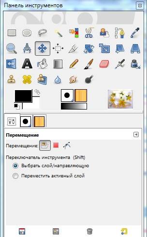
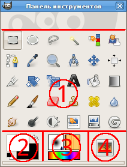

Панель инструментов GIMP
Панель инструментов — единственная часть интерфейса программы, которую нельзя продублировать или закрыть.
Эта панель состоит из двух основных частей: верхняя содержит список разнообразных инструментов, а нижняя — совокупность параметров и настроек выделенного инструмента. Например, если в верхней части вы выделите инструмент Кисть, то в нижней части появятся параметры этого инструмента.
Таким образом, на данной панели можно выбрать и настроить любой необходимый инструмент, подготовив его к работе.
Панель инструментов можно поместить в любое место интерфейса программы. Для передвижения панели подцепите курсором ее верхнюю часть, где располагается название, и, не отпуская кнопки мыши, передвиньте курсор. При наведении курсора на какой-либо из углов панели он принимает форму диагональной стрелочки: теперь можно редактировать габаритные размеры панели.
Внешний вид Панели инструментов представлен на рисунке.
GIMP содержит разнообразный набор инструментов, позволяющих вам решать различные задачи. Инструменты можно разбить на пять категорий:
Инструменты выделения, которые помечают и изменяют область изображения, над которой будут проведены дальнейшие действия;
Инструменты рисования, которые изменяют цвета в части изображения;
Инструменты преобразования, которые изменяют геометрию изображения;
Инструменты цветокоррекции, которые изменяют распределение цветов по всему изображению;
Прочие инструменты, которые не попадают в другие категории.

1. Пиктограммы инструментов: эти пиктограммы являются кнопками, активирующими инструменты для разнообразных действий.
2. Цвета фона/переднего плана: область выбора цвета показывает текущие выбранные вами цвета переднего плана и фона, применяемые во многих операциях. Щелчок по одному из них вызовет диалог выбора цвета. Щелчок по двунаправленной стрелке поменяет местами цвета переднего плана и фона, а щелчок по небольшому символу в нижнем левом углу восстановит исходные значения цветов переднего плана и фона: черный и белый соответственно.
3. Киcть/Текстура/Градиент: Расположенные здесь значки показывают текущие выбранные элементы GIMP, такие как: кисть, используемую всеми рисующими инструментами («рисование», кстати, включает в себя такие операции, как стирание и размазывание); текстуру, используемую для заливки выделенных областей изображения, и градиент, который применяется, когда необходимо создать плавный цветовой переход. Щелчок по любому из этих значков вызовет диалоговое, окно позволяющее изменить соответствующий элемент.
4. Активное изображение: в GIMP вы можете работать с многими изображениями одновременно, но в любой момент только одно из них является активным изображением. Этот элемент интерфейса представляет собой эскиз (уменьшенную копию) активного изображения. Щелчок по нему вызовет диалог со списком всех открытых на данный момент изображений, позволяя вам при желании изменить активное изображение. (А можно просто щёлкнуть мышкой по окну другого изображения).
Замечание
Эскиз «активного изображения» по умолчанию отключен. Если хотите его активировать, это можно сделать на странице Панель инструментов диалога настройки программы (Правка - Параметры - Панель инструментов).
Большинство инструментов активируется щелчком значка на панели инструментов. Доступ к некоторым (в частности, инструментам цветокоррекции, однако, возможен лишь через меню Цвет или Инструменты → Цвет. Каждый инструмент можно активировать через меню Инструменты, а также через клавиатуру при помощи клавиатурной комбинации.
При используемых по умолчанию параметрах не у всех инструментов есть значок на панели инструментов: к примеру, нет инструментов цветокоррекции. Вы можете изменить набор показываемых на панели инструментов через диалог Инструменты. Вы можете захотеть сделать это по двум причинам: во-первых, редко используемые инструменты не будут отвлекать, и легче будет найти нужный инструмент; во-вторых, если вы часто используете инструменты цветокоррекции, вам будет удобнее иметь их под рукой.
В любом случае, вне зависимости от панели, вы можете вызвать любой инструмент через меню окна изображения Инструменты.
Параметры инструмента
У каждого инструмента свой набор параметров. Ваши выборы сохранены в течение сессии, пока вы их не измените. В действительности, параметры инструментов сохраняются от сессии к сессии. Сохраняемость параметров иногда может быть нежелательна: инструмент ведёт себя ненормально, пока вы не вспомните, что вы использовали его с необычными параметрами в прошлый раз пару недель назад.
Внизу диалога Параметры инструментов находятся четыре кнопки:
Сохранить параметры. Эта кнопка позволяет вам сохранить настройки для текущего инструмента, чтобы потом можно было их восcтановить. Она показывает на экране маленький диалог, с помощью которого вы можете дать название набору параметров. Когда вы восстанавливаете настройки, показаны только сохраненные наборы для текущего инструмента, так что вам здесь не нужно беспокоится об указании имени инструмента.
Восстановить параметры. Эта кнопка позволяет восстановить сохранённый набор параметров для текущего инструмента. Если ни один набор не был сохранён до этого, то кнопка будет нечувствительна к нажатию. Иначе, она покажет меню с именами всех сохранённых наборов параметров: выбор пункта меню установит те настройки.
Удалить параметры. Эта кнопка позволяет вам удалить прежде сохранённый набор параметров для текущего инструмента. Если никаких наборов не было сохранено для текущего инструмента, кнопка будет нечувствительна к нажатию. Иначе, она покажет меню с именами всех сохранённых наборов параметров: выбор пункта меню удалит те настройки.
Сбросить параметры. Эта кнопка восстановит значения параметров как они были по умолчанию.
Подсказка
Параметры инструментов по умолчанию показываются под панелью инструментов. Если вы каким-то образом потеряете эту панель, ее можно получить обратно через меню Окна → Панели → Параметры инструментов, а затем перенести под панель инструментов.
Подсказка
В панели инструментов, как и в большинстве элементов интерфейса GIMP, помещение курсора мыши над каким-либо элементом с задержкой на мгновенье обычно вызывает «подсказку», которая описывает этот элемент. В подсказке также часто показана клавиша быстрого доступа. Кроме того, в большинстве случаев для получения справки по этому элементу вы можете нажать клавишу F1, поместив перед этим курсор мыши над элементом.
Подсказка
Перетащите любое изображение на панель инструментов, чтобы его открыть. Если изображение перетащить на окно уже открытого изображения, то новое изображение добавляется как новый слой к уже существующему изображению.
Замечание
При каждом запуске GIMP выбирает инструмент (кисть), цвет, кисть и текстуру по умолчанию — всегда те же самые. Чтобы GIMP выбирал активный инструмент, цвет, кисть и текстуру, использовавшиеся в предыдущий раз, необходимо включить параметр «Сохранить параметры устройств ввода при выходе» в Диалоге настройки программы.